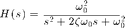
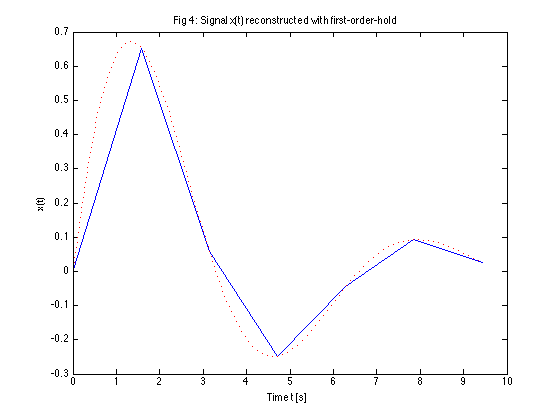
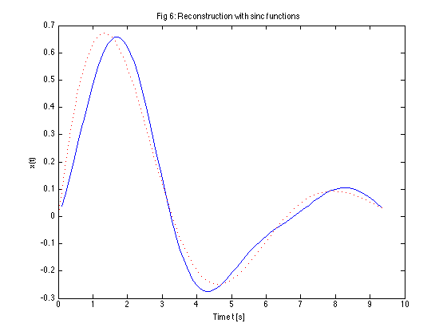

Sampling Theory
Matlab script to illustrate sampling and reconstruction.
Prepared for EG-247 Singla and Systems by Dr Chris Jobling.
Contents
Basic set up
clear all w0 = 1; % fundamental frequency rad/s t0=2*pi/w0; % period s tmax = 1.5*t0; % plotable range
Define a suitable signal
We will use a system with an underdamped second-order response
The transfer functionL

syms s t zeta = 0.3; H = w0^2/(s^2 + 2*zeta*w0*s + w0^2)
H = 1/(s^2 + (3*s)/5 + 1)
Calculate and plot impulse response
h = ilaplace(H)
h = (10*91^(1/2)*exp(-(3*t)/10)*sin((91^(1/2)*t)/10))/91
t = linspace(0,tmax,100); xc = eval(h); % eval evaluates a symbolic expression as a Matlab command. tc = t; plot(tc,xc) title('Fig 1: Continuous Time Signal x(t)') ylabel('x(t)') xlabel('Time t [s]')

Calculate and plot sampled data
ws = 4*w0; % twice minimum!
Ts = (2*pi)/ws;
t = 0:Ts:tmax;
xs = eval(h);
td = t;
stem(td,xs) hold on plot(tc,xc,'r:') hold off title('Fig 2: Sampled Signal x_s(t)') ylabel('x_s(t)') xlabel('Time t [s]')

Signal reconstructed with ZOH
stairs(td,xs) hold on plot(tc,xc,'r:') hold off title('Fig 3: Signal x(t) reconstructed with zero-order-hold') ylabel('x(t)') xlabel('Time t [s]')

Signal reconstructed with FOH
plot(td,xs,tc,xc,'r:') title('Fig 4: Signal x(t) reconstructed with first-order-hold') ylabel('x(t)') xlabel('Time t [s]')
Signal reconstructed with sinc function
stem(td,xs) hold on x = zeros(length(td),length(tc)); for k=1:length(td) xk = xs(k); sincx = xk*sin(pi*(tc - td(k))/Ts)./(pi*(tc - td(k))/Ts); x(k,:) = sincx; end plot(tc,x,'-.') hold off title('Fig 5: Signal x(t) reconstructed with sinc functions') ylabel('x(t)') xlabel('Time t [s]')

Reconstructed signal
Obtained by summing all the sinc functions
plot(tc,sum(x),tc,xc,'r:') title('Fig 6: Reconstruction with sinc functions') ylabel('x(t)') xlabel('Time t [s]')